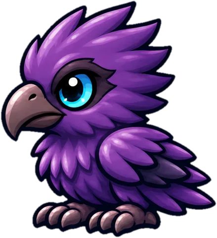

 Wind
WindTap a stage to read its story.
Rayvling is a small, round-bodied raven chick with deep violet-purple plumage, oversized blue eyes that glow faintly, and a beak already sharper than its size suggests. Its wings are still too short for proper flight - it hops and flutters between the hollow roots of Ghost Hollow, collecting shiny fragments it buries under bark. It is not yet afraid of anything and will walk right up to a shadow-wraith, tilt its head, and stare it down. The guardians say the hollow became a little less frightening the day the first Rayvling hatched, because something unafraid finally lived there.
Field note: Rayvling hides one shiny object a day and will lead a patient friend directly to its entire buried collection if it likes them.
Ghost Hollow. Rayvling and its family are found in the Ghost Hollow. See everyone who lives there.
Share a Bond Food that matches its types to become friends. Rayvling loves:
A Bond Food is not a trick. It joins your spirit with the Kimuro's spirit, and only when it chooses you.
Print the Kimuro adventure packs: mazes, cards, a board game and Bond Mark medals.
See the printable packs